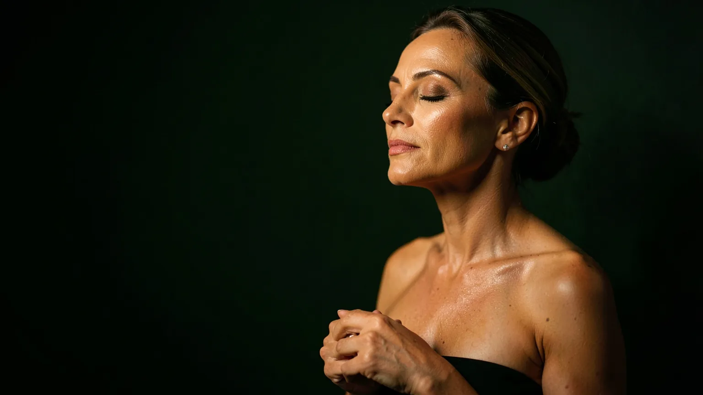
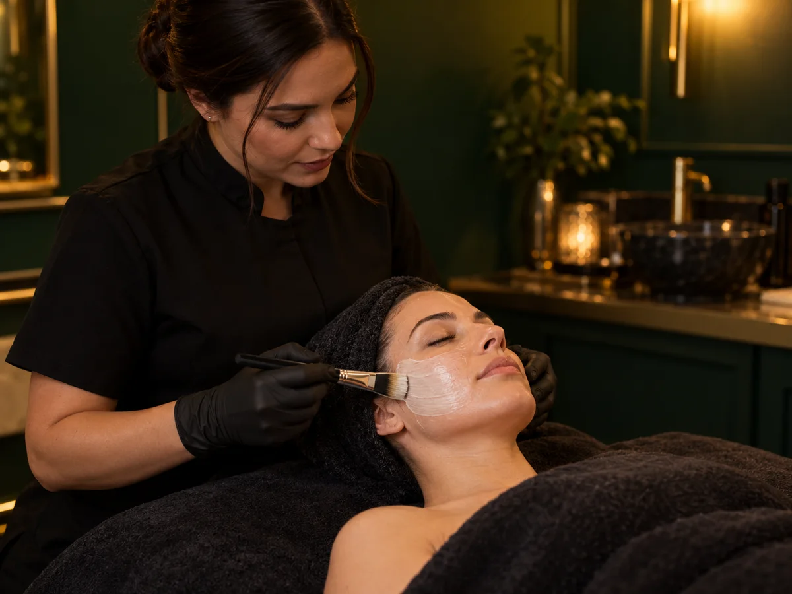
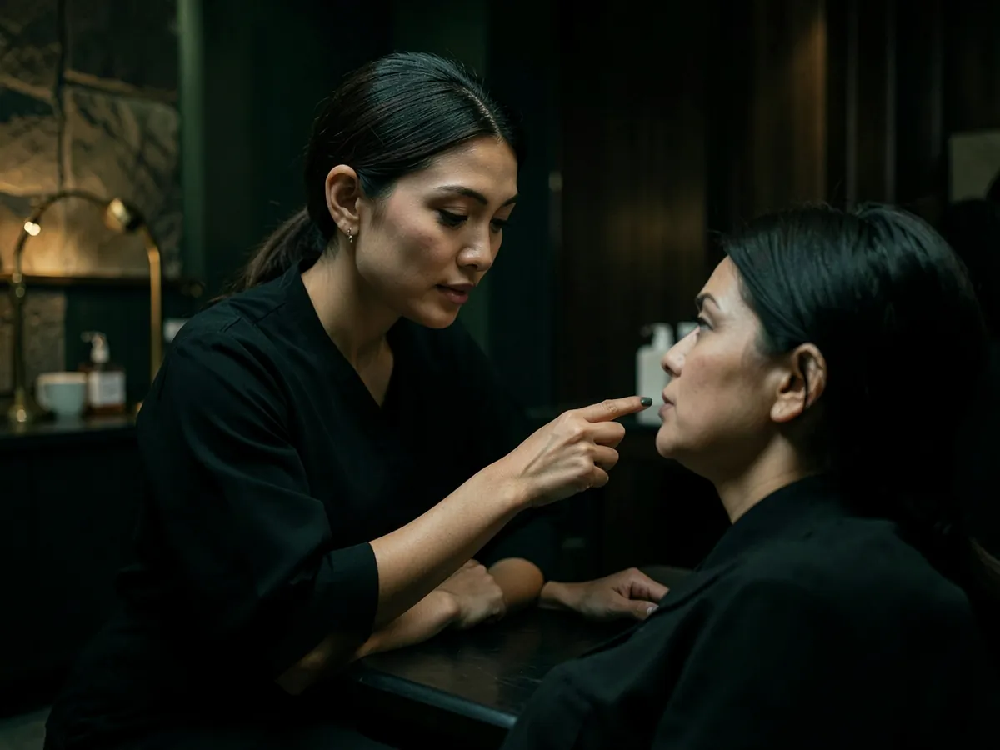
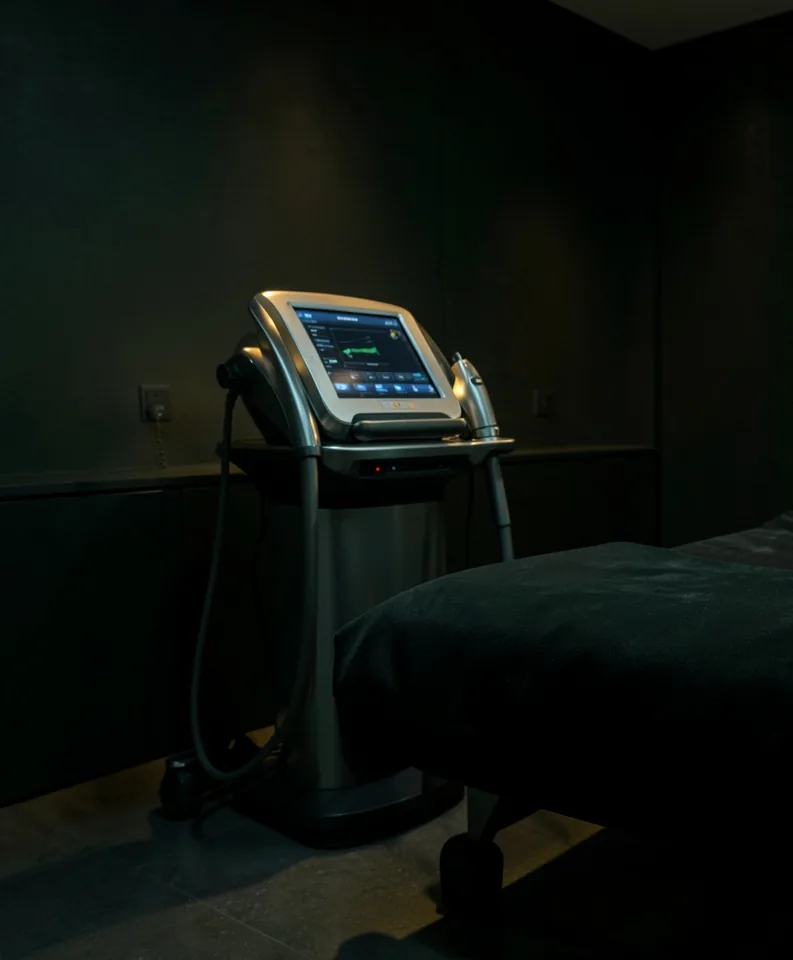
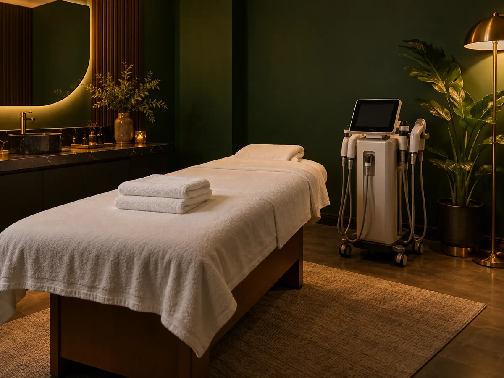
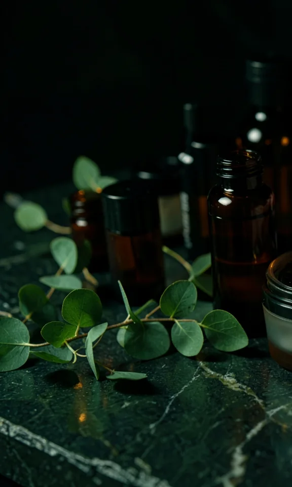
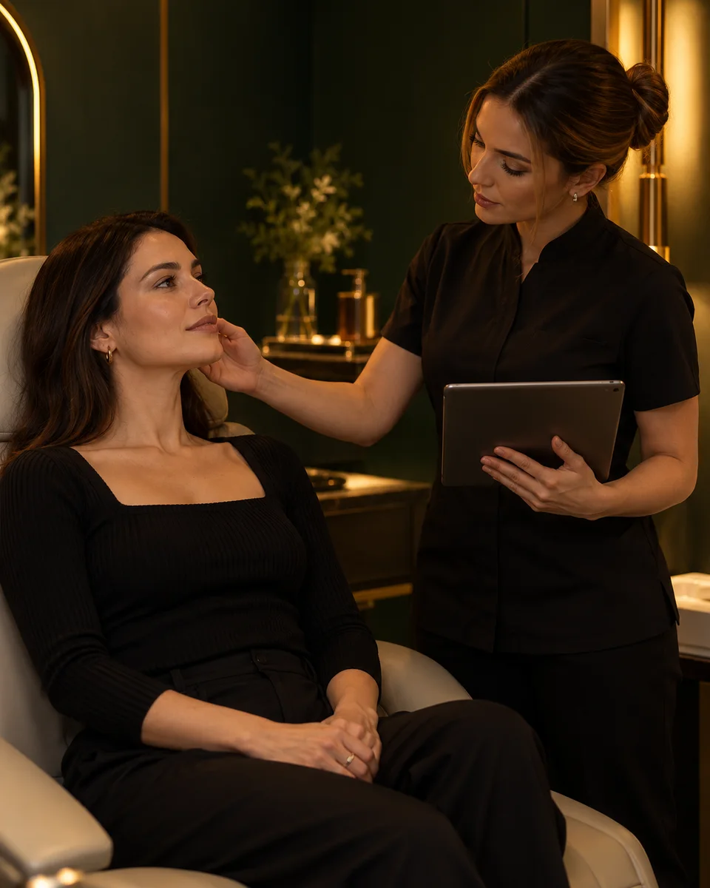
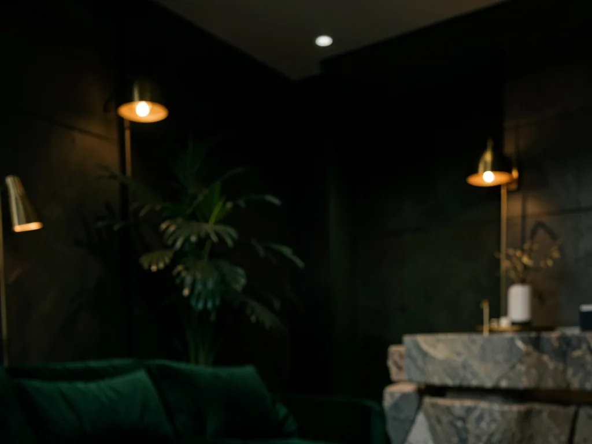
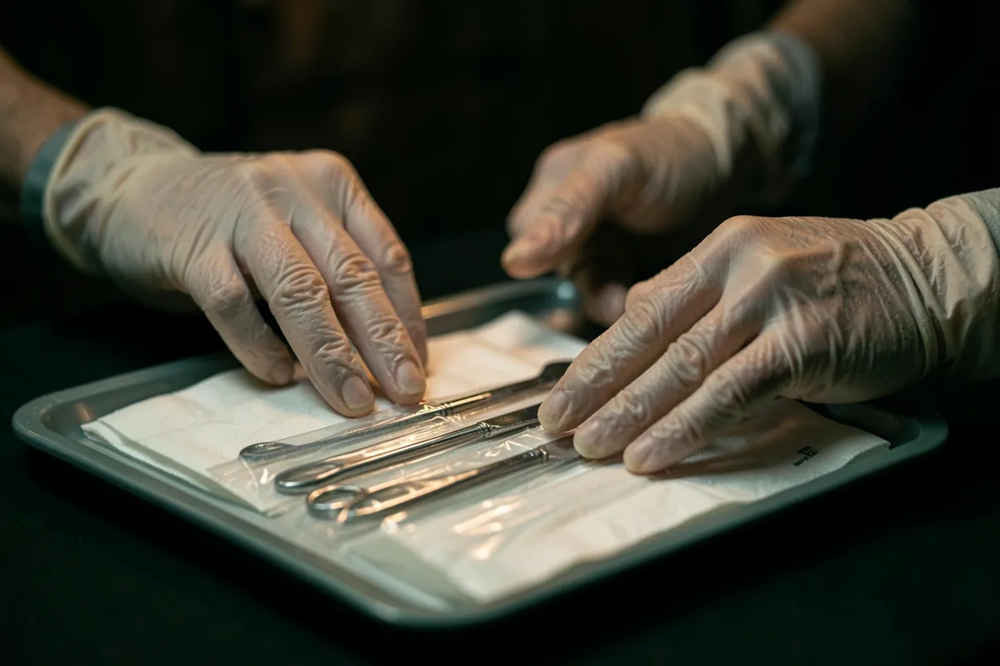

A melhor versão da sua pele começa com um diagnóstico
Na Aurora, cada protocolo é desenhado a partir de uma avaliação detalhada, com tecnologia e acompanhamento a cada sessão.
Procedimentos
Toque em cada um para ver como funciona. A indicação final é sempre feita na avaliação, de acordo com a sua pele e o seu objetivo.
Rejuvenescimento facial
Facial

Protocolos que combinam ativos, estímulo de colágeno e cuidados em casa para devolver firmeza, viço e uniformidade à pele.
- Microagulhamento
- Peelings
- Bioestimulação
Harmonização e contorno
Facial

Procedimentos feitos por profissional habilitado, com planejamento do rosto como um todo e foco em resultado natural.
- Avaliação de proporções
- Planejamento por etapas
- Retorno de acompanhamento
Tecnologias
Facial e corporal

Equipamentos usados com parâmetros ajustados para cada pele, sempre depois da avaliação e com os cuidados explicados antes da sessão.
- Laser e luz pulsada
- Radiofrequência
- Ultrassom
Corpo
Corporal

Tratamentos para contorno, firmeza e bem-estar, com número de sessões definido na avaliação.
- Drenagem linfática
- Massagem modeladora
- Protocolos para flacidez e celulite
Skincare e manutenção
Facial

Limpeza de pele, hidratação e orientação de rotina para manter os resultados entre um protocolo e outro.
- Limpeza de pele
- Hidratação profunda
- Rotina orientada para casa
Os resultados variam de pessoa para pessoa. Procedimentos com indicação específica são realizados por profissional habilitado.

Como funciona a avaliação
É nela que se decide o que fazer, e também o que não fazer.
Escuta
Você conta o que incomoda, o que já fez e o que espera. Falamos também de rotina, saúde e cuidados em casa.
Análise
A pele ou a região a tratar é examinada com atenção para entender o que está por trás do que você vê no espelho.
Protocolo
Você recebe a proposta de tratamento, o número de sessões, os cuidados e o que esperar em cada etapa.
Acompanhamento
A cada retorno, avaliamos a evolução e ajustamos o que for preciso.
A clínica
Um ambiente reservado, pensado para você se sentir à vontade do primeiro contato ao fim da sessão.


Biossegurança
Materiais descartáveis ou esterilizados e protocolos de higiene em cada atendimento.
Indicação honesta
Só indicamos o que faz sentido para você, e dizemos quando um procedimento não é o caminho.
Privacidade
Atendimento com hora marcada e salas reservadas.
Dúvidas frequentes
Não encontrou a sua? Pergunte pelo WhatsApp.
A avaliação é obrigatória?
Sim. É a avaliação que define o procedimento indicado, o número de sessões e os cuidados. Sem ela, não há como garantir segurança.
Os procedimentos doem?
Depende do procedimento e da sensibilidade de cada pessoa. Na avaliação explicamos o que você deve sentir e como deixamos a sessão mais confortável.
Em quanto tempo vejo resultado?
Cada tratamento tem o seu tempo. Alguns mostram mudança logo após a sessão, outros dependem de algumas semanas de estímulo da pele. Isso é explicado antes de começar.
Como agendo?
Pelo WhatsApp (21) 98060-2549.
Quais são as formas de pagamento?
Valores, pacotes e formas de pagamento são informados pelo WhatsApp, depois da avaliação.